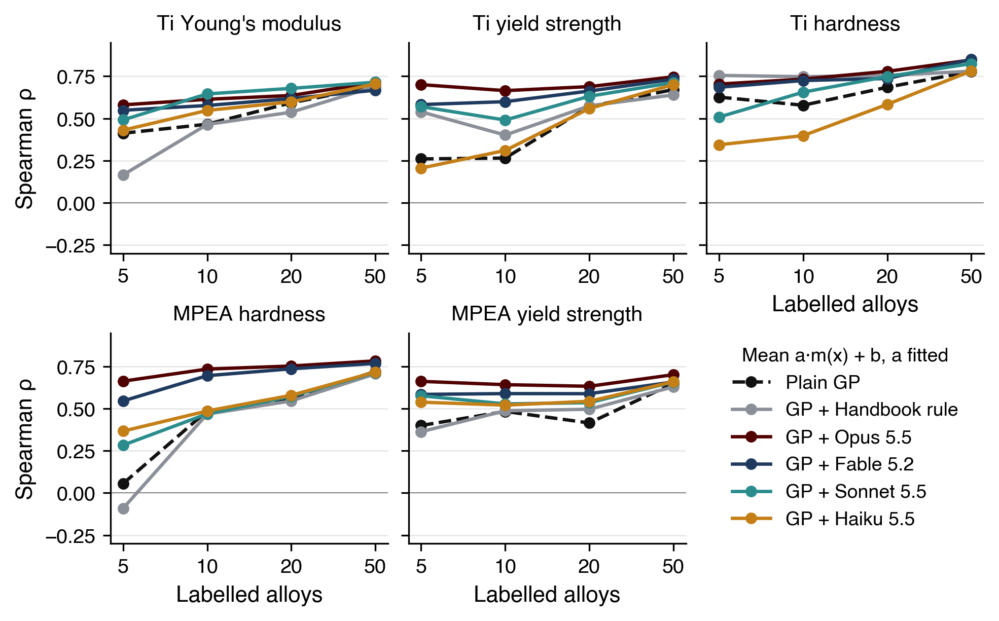

MATERIALS SCIENCE & ENGINEERING
TEXAS A&M UNIVERSITY
Department of Materials Science and Engineering
32

Slope fitted; ρ at 5 labels
Ti yield: 0.26 → 0.70 (Opus)
MPEA HV: 0.06 → 0.66 (Opus)
Ti HV: 0.63 → 0.34 (Haiku)
At 50 labels, Opus
Ti HV: 0.78 → 0.85